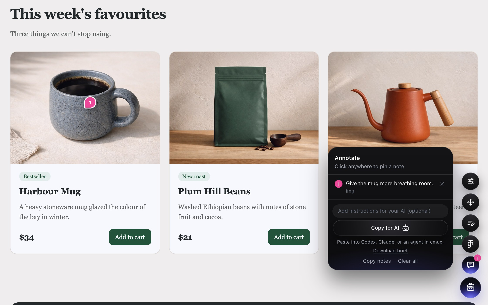

Turn your prototype into a canvas
Tweak styles, move things, rewrite copy, and pin notes on websites from your browser toolbar. Export your changes for Figma or a coding agent.
Tools



{
"tool": "Content editor",
"note": "Shorter headline",
"data": {
"edits": [{
"selector": "main h1",
"before": "Coffee gear for unhurried mornings",
"after": "Make mornings slower"
}]
},
"page": "https://…/sample.html"
}
Add it to your toolbar
- Download the extension and unzip it into a folder you’ll keep.
- Open
chrome://extensions(oredge://extensions) and turn on Developer mode. - Choose Load unpacked and select the unzipped folder containing
manifest.json. - Pin Prototype Toolbox in the Extensions menu. Click its icon on a website to open or hide the tools.
Shortcut: Alt/Option + Shift + T. No account or hosted scripts needed after installation. If your work browser blocks Developer mode, your browser administrator must allow it.
Legacy bookmarklet
The extension is recommended. This older bookmarklet is blocked by many sites and requires access to Shopify Quick.
{{BOOKMARKLET_CODE}}
Limitations
- Protected pagesBrowser settings, extension stores, and some built-in viewers cannot be edited.
- Not savedChanges reset on reload. Copy them out first.
- IframesOnly the top page can be edited.
- Live appsPages that re-render may undo text and style edits.
- Figma exportExports SVG layers. Protected images, canvas, and video may be omitted; export messages explain limitations.
- Desktop onlyBuilt for a mouse and keyboard.